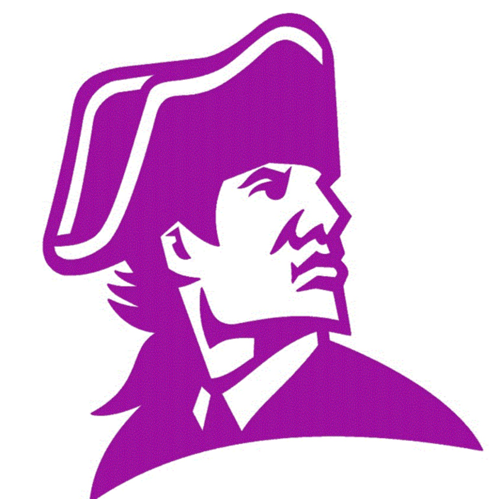
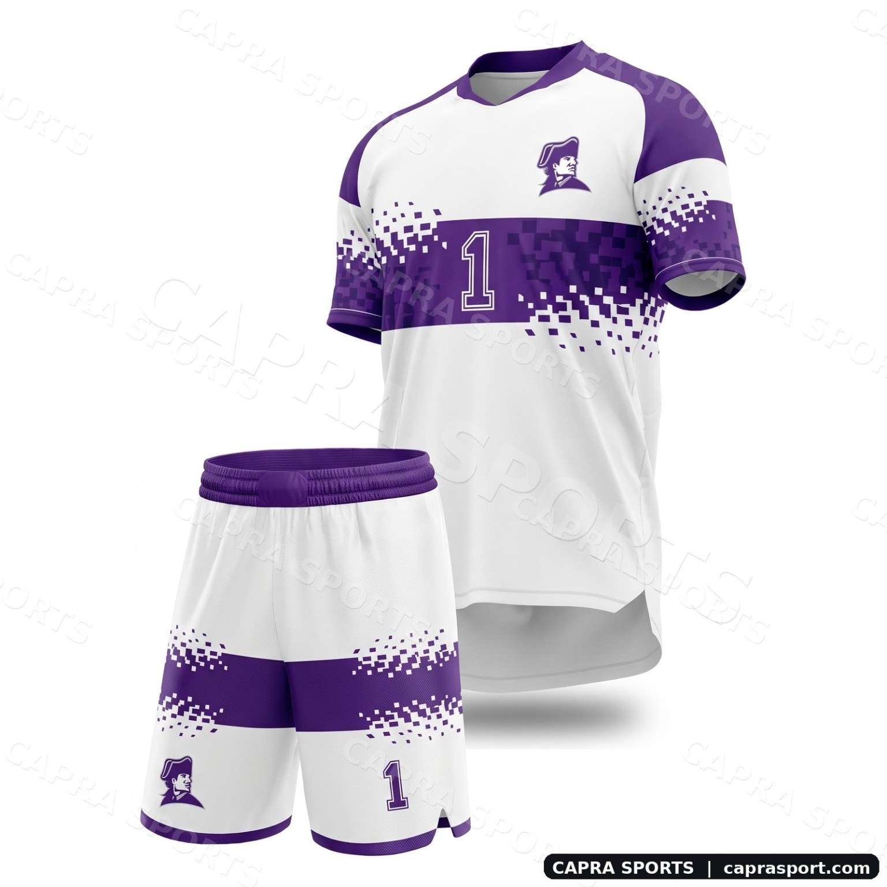
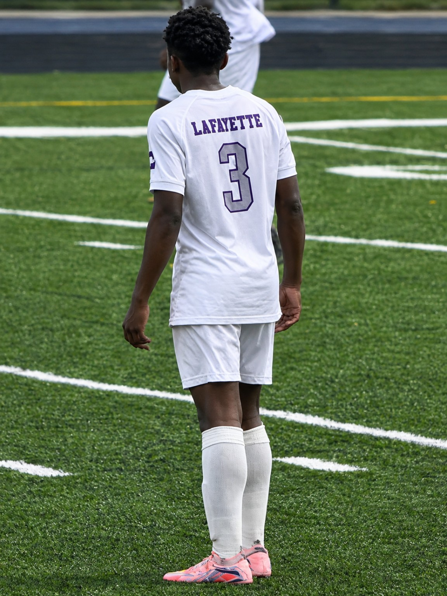

1903
A BUFFALO LANDMARK
The historic Lafayette High School building opened in September 1903. It remains part of the school's story on Buffalo's West Side.
READ BUILDING HISTORY ↗
LAFAYETTEVARSITY SOCCERDiscover the colors, people, and story behind Lafayette International High School Varsity Soccer.
Two looks. One identity. Explore the proposed home and away concepts, choose a shirt number, and spin the presentation to inspect the design.

A clean white base with Lafayette violet, pixel-inspired bands, and the school mascot at the chest. A modern take on a classic identity.
Concept showcase only. Number preview is illustrative; final kit details require school approval.
Lafayette's story spans a historic Buffalo school building and a newer international-school mission. Soccer adds another chapter, season by season.
The historic Lafayette High School building opened in September 1903. It remains part of the school's story on Buffalo's West Side.
READ BUILDING HISTORY ↗Lafayette International High School was introduced in 2016, with a focus on serving multilingual students and the local immigrant community.
READ THE ANNOUNCEMENT ↗Public game listings document Lafayette varsity boys soccer playoff and championship appearances across recent seasons, including 2021, 2022, 2024, and 2025.
EXPLORE MATCH ARCHIVE ↗New kits, new memories, and the next season of Lafayette soccer. This space can grow with the team.
EXPLORE THE GALLERY ↗Historical note: the school's building history and the current Lafayette International High School program are related but not the same founding date. The exact start date of the varsity soccer program has not been confirmed here.
Watch highlights and explore publicly listed match history. Match scores and season records should be checked against the team's official updates.
WATCH LAFAYETTE HIGHLIGHTS ↗Players, coaches, teammates, and the moments that make a season matter.


A fan-made visual showcase concept celebrating Lafayette International High School soccer. Created to share the jersey concepts, team spirit, and public history in one place.
OFFICIAL SCHOOL WEBSITE ↗